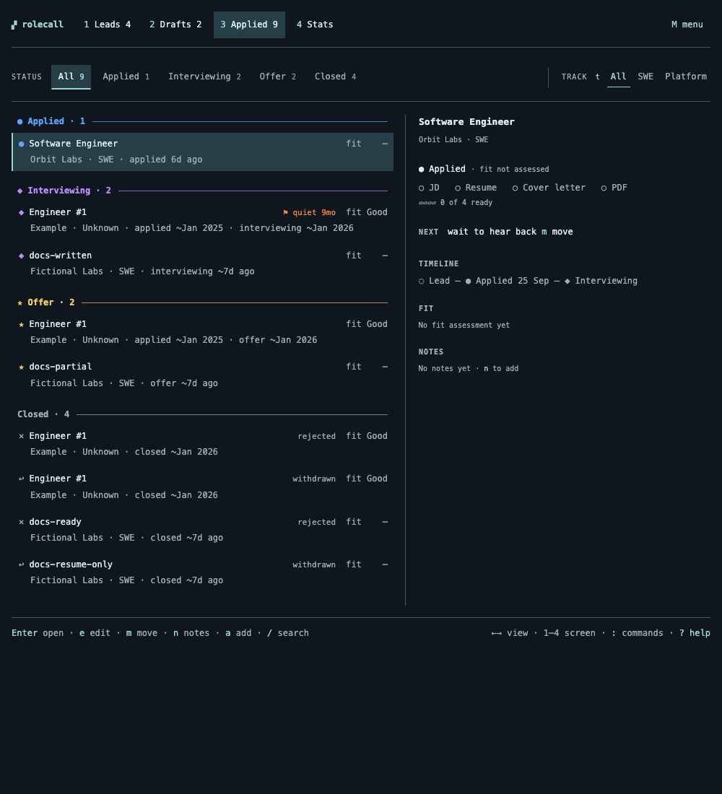
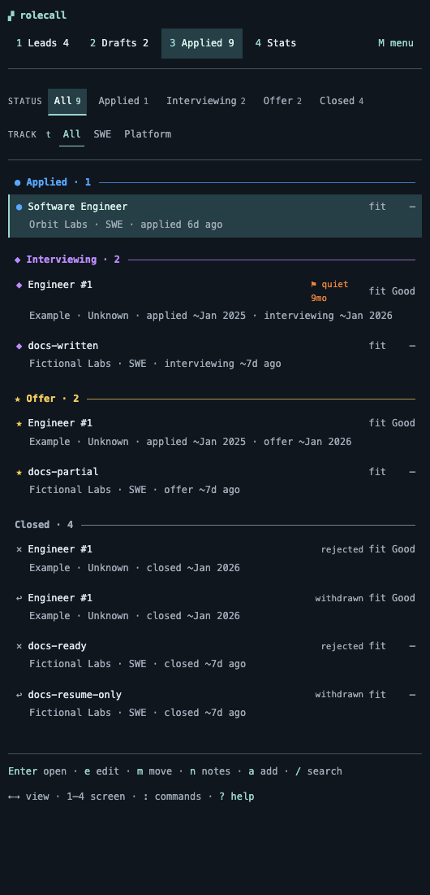
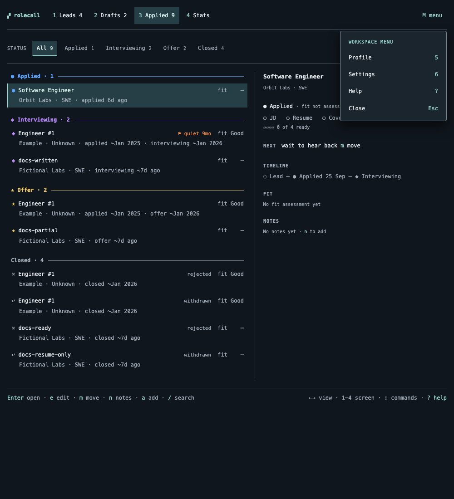
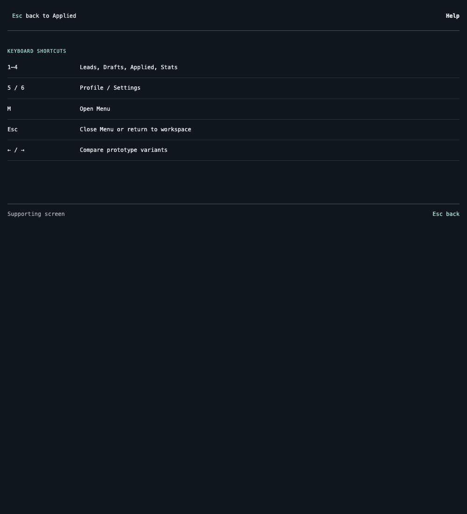
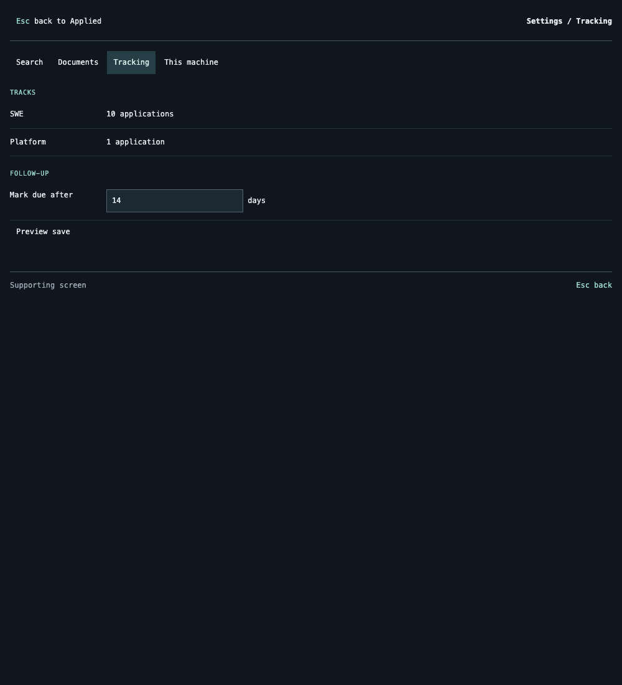

Design A — five independent reviews
Five reviewers read the same 18 screenshots cold, each through a different lens: hierarchy, interaction, colour & accessibility, layout, and polish. None saw the code or any earlier review. Each After panel below combines the fixes they agreed on into one terminal-grid mock-up, using real cell widths and no web layout.
Bar = average. Chips = individual scores in lens order: Hierarchy · Interaction · Colour & a11y · Layout · Polish.
What they found
Most severe first. Red = 4+ reviewers agree, or I reproduced or measured it.
- 5/5Help is incomplete and leaks prototype text06-help
Lists 5 bindings and leaves out Enter, e, m, n, a, /, :, t and s. Says “← / → Compare prototype variants” while the footer says “←→ view”.
- 5/5The detail pane disappears silently at narrow width01-applied-530
At 530px (≈63 cols) the pane is gone and nothing tells you how to reach it.
- 5/5Wrapping and truncation at 80–88 cols01-applied-728 · 530
“○ PDF” wraps alone, the timeline orphans “◆ / Interviewing”, row meta cuts the stage date (“interv…”), and “⚑ quiet / 9mo” breaks across two lines.
- 5/5The fit column is noise and uses inconsistent words01-applied-1000
“fit” repeats on every row, “fit —” leaves a ragged gap, and the detail pane says it three ways: “fit not assessed”, “No fit assessment yet”, “fit —”.
- 5/5Menu overlay: no cursor, covers state02-menu-*
No item is highlighted, “Close Esc” is used up as a menu row, it covers the Track filter, and at 530 it also covers rows.
- 4/5Three different selection styles01-applied-1000
The nav uses a filled block, status uses fill plus underline, track uses underline only. They read as three different kinds of control.
- 4/5Supporting screens are placeholders04 · 05
The footer says “Supporting screen”. Settings is a web form (220px input for 2 digits, “Preview save” has no key). “SWE 10” doesn’t match “Applied 9” and nothing explains why.
- 3/5M menu vs m move01 footer + nav
Only Shift separates opening the menu from moving an application, so a wrong-case press moves something.
- 3/5Footer floats instead of sitting on the last row03 · 04 · 05 · 06
The bottom 40–60% of the screen is dead (partly a prototype-fidelity issue: HTML content height).
- ReproducedStatus filter has no key01-applied-1000
TRACK shows
t, STATUS shows nothing, and no footer hint covers it. Offer can’t be reached from the keyboard. - MeasuredBlue/violet collapse for colour-blind users; light theme failsall
#58a6ff and #bc8cff differ only in red channel (lum 7.20 vs 7.22). On white, accent is 1.64:1 and Offer is 1.55:1.
- MeasuredSelection is weak01-applied-1000
Selected fill #263e46 is 1.61:1 against the page, and the selected title barely changes colour.
- 2/5Glyphs that render badly01 detail
▱ is missing from Menlo, Consolas and DejaVu and looks like tofu. ◌ renders as a dotted placeholder. ⚑ and ↩ can turn into emoji or double width.
- 2/5Closed group has no glyph; Offer rule changes colour between states01 vs 03
Every other group has a glyph and colour; Closed has neither.
Each reviewer’s one big change
They overlap. Three of five say the same thing: treat it as a terminal grid that owns every row.
? overlay, lazygit-style: the footer shows only keys valid for the focused pane, starting with s status · t track.1 · Main list, wide (≈106 cols)
The screen people live in. Most of the agreed fixes land here.

▞ rolecall 1 Leads 4 2 Drafts 2 3 Applied 9 4 Stats ▁▂▅▃▇▂▁▄ g menu ? help ────────────────────────────────────────────────────────────────────────────────────────────────────────── STATUS s All 9 Applied 1 Interviewing 2 Offer 2 Closed 4│ TRACK t All 9 SWE 8 Platform 1 ──────────────────────────────────────────────────────────┬─────────────────────────────────────────────── ● Applied · 1 ────────────────────────────────────────── │ Software Engineer ▌● Software Engineer · │ Orbit Labs · SWE · applied 6d ago ▌ Orbit Labs · SWE · applied 6d ago │ │ ● Applied fit not assessed ◆ Interviewing · 2 ────────────────────────── 1 quiet ── │ ◆ Engineer #1 ⚑9mo Good │ DOCS ▱▱▱▱ 0/4 d generate Example · Unknown · interviewing ~Jan 2026 │ ○ JD ○ Resume ○ Cover letter ○ PDF ◆ docs-written · │ Fictional Labs · SWE · interviewing ~7d ago │ NEXT Wait to hear back m move │ ★ Offer · 2 ──────────────────────────────────────────── │ TIMELINE ★ Engineer #1 Good │ ○ Lead Example · Unknown · offer ~Jan 2026 │ ● Applied 25 Sep ★ docs-partial · │ ◇ Interviewing next Fictional Labs · SWE · offer ~7d ago │ │ NOTES none yet n add ✕ Closed · 4 ─────────────────────────────────────────── │ ✕ Engineer #1 rejected Good │ Example · Unknown · closed ~Jan 2026 │ – Engineer #1 withdrawn Good │ Example · Unknown · closed ~Jan 2026 │ ✕ docs-ready rejected · │ Fictional Labs · SWE · closed ~7d ago │ ──────────────────────────────────────────────────────────┴─────────────────────────────────────────────── Applied › All · All tracks · 1/9 · list ✓ Moved docs-written → Interviewing u undo Enter open e edit m move n notes a add / search s status t track : commands ? help
- One selection style everywhere: filled #2f5560 block with bright bold text, plus a
▌gutter on the selected row. - Status gets a key (
s), matchingtfor track. Track options get counts. - Fixed right columns: flag 6 · stage 11 · fit 6.
⚑9monever wraps. The word “fit” is gone:Goodin green,·when unassessed. - Group rollups in the rule (
1 quiet). Closed gets a✕glyph. Withdrawn uses–instead of the emoji-risk↩. - Detail pane: one type size. Every section uses
LABEL … value … [key] action. The timeline is vertical, so it can’t orphan a glyph. Docs gets a generate key. - Breadcrumb line (
Applied › All · All tracks · 1/9 · list) shows where you are and what’s focused. An undo toast sits on the same row. - Footer on the last row;
g menureplacesM, so it can’t collide withm move. - Stats sparkline in the nav, as a small daily reason to look.
2 · Narrow (≈64 cols)
The detail pane used to vanish without a word. Now it becomes a bottom sheet.

▞ 1 Leads 4 2 Drafts 2 3 Applied 9 4 Stats g menu ──────────────────────────────────────────────────────────────── s All 9 Applied 1 Interv 2 Offer 2 Closed 4 │ t:All ──────────────────────────────────────────────────────────────── ● Applied · 1 ──────────────────────────────────────────────── ▌● Software Engineer · ▌ Orbit Labs · SWE · 6d ◆ Interviewing · 2 ───────────────────────────────── 1 quiet ─ ◆ Engineer #1 ⚑9mo Good Example · interviewing ~Jan 2026 ◆ docs-written · Fictional Labs · interviewing ~7d ★ Offer · 2 ────────────────────────────────────────────────── ★ Engineer #1 Good Example · offer ~Jan 2026 ✕ Closed · 4 ───────────────────────────────────────────────── ✕ Engineer #1 rejected Good ╭─ Software Engineer ──────────────────────────────────────────╮ │ ● Applied · Orbit Labs · SWE docs ▱▱▱▱ 0/4 │ │ Next wait to hear back m move Enter full │ ╰──────────────────────────────────────────────────────────────╯ Enter detail m move / search s t filter ? help
- Bottom sheet (4 lines, rounded border) with status, docs, next action and
Enter full. - One filter line: status chips, then
│ t:Allcollapsed on the right. Saves a row. - Meta drops company/track first and keeps the stage date, the one fact that differs between rows.
- Footer collapses to one line and leads with
Enter detail.
3 · Workspace menu
Anchored, with a cursor, without covering the state you need.

- Backdrop dims so focus is obvious. The menu sits under
g menu, not over the filters. ▸cursor plus a highlighted row. ↑↓ moves, Enter opens.- Esc lives in the border instead of using up a row. That row now holds the command palette (
:). - Below 72 cols, the same box renders as a bottom sheet above the footer.
4 · Help
Lowest score in the review (2.2). It should be the most complete screen, not the least.

▞ rolecall 1 Leads 4 2 Drafts 2 3 Applied 9 4 Stats ▁▂▅▃▇▂▁▄ g menu ? help ────────────────────────────────────────────────────────────────────────────────────────────────────────── NAVIGATE ACT FILTER & FIND ────────────────────────────── ────────────────────────────── ────────────────────────────── ↑↓ j k move cursor e edit application s cycle status ← → list ⇄ detail m move stage… S status back Enter open detail n notes t cycle track 1–4 switch tab a add application / search 5 6 Profile · Settings d generate docs Esc clear search g workspace menu u undo last change ? this sheet Esc back / close : command palette Keys shown in the footer change with focus. Press ? anywhere to return here. ────────────────────────────────────────────────────────────────────────────────────────────────────────── / filter keys Esc close rolecall 0.9 · keymap generated from bindings
- Generated from the real keymap, so it can never drift from the footer again.
- Three groups: Navigate / Act / Filter & find, with every key the footer mentions.
- Key chips in reverse video, scannable at a glance.
- Prototype-only text (“Compare prototype variants”, “Supporting screen”) removed.
5 · Settings
From a web form to a keyboard form.

▞ rolecall 1 Leads 4 2 Drafts 2 3 Applied 9 4 Stats ▁▂▅▃▇▂▁▄ g menu ? help ────────────────────────────────────────────────────────────────────────────────────────────────────────── SETTINGS [ Search Documents Tracking This machine ] ● 1 unsaved change ────────────────────────────────────────────────────────────────────────────────────────────────────────── TRACKS SWE 10 applications 9 active · 1 closed Platform 1 application 1 active FOLLOW-UP ▌ Mark due after 14▏ days was 7 Enter edit -/+ adjust Flag as quiet after 30 days shows ⚑ on the row Changes save to workspace/settings.toml — nothing is written until ctrl+s. ────────────────────────────────────────────────────────────────────────────────────────────────────────── ↑↓ field Enter edit [ ] tab ctrl+s save ctrl+z revert Esc back to Applied ? help
[ ]switch tabs; the active tab uses the same selection style as everywhere else.- Field cursor (
▌plus a row tint) and an inline 3-cell input instead of a 220px box. - Dirty state is visible:
● 1 unsaved changepluswas 7on the field.ctrl+ssaves andctrl+zreverts. - Explains the count mismatch:
10 applications · 9 active · 1 closed.
6 · Colour & accessibility
Every status colour is a fixed hex tuned for one dark background. Below: the proposed adaptive pairs, and what red-green colour-blind users actually see.
AdaptiveColor)| Role | Now | Dark (new) | Light (new) | |
|---|---|---|---|---|
| Accent / keys | #9ad5cf | #9ad5cf | #0f766e | teal is reserved for pressable keys only |
| Applied | #58a6ff | #58a6ff | #0550ae | |
| Interviewing | #bc8cff | #f778ba | #bf3989 | blue and violet merge for red-green colour blindness |
| Offer | #f2cc60 | #f2cc60 | #9a6700 | 1.55:1 on white today |
| Quiet flag | #f0883e | #f0883e | #bc4c00 | |
| Metadata | #a1acb9 | #a1acb9 | #57606a | |
| Dividers | #465361 | #5a6878 | #d0d7de | 2.3:1 → 3.1:1 |
| Selected row | #263e46 | #2f5560 | #ddf4ff | + ▌ gutter so it survives 16-colour terminals |
- Interviewing → magenta #f778ba. Blue and violet collapse into the same blue today. Magenta stays distinct.
- Glyph is always present (● ◆ ★ ✕), so colour is never the only signal.
- Safer glyphs:
▱/▰only with a0/4text fallback.◌→○.↩→–. Status glyphs get a fixed one-cell slot. - Bolder option: map to the user’s ANSI-16 palette and stop painting the background at all.
7 · Polish ideas
The “flat but organised” verdict is the opportunity here. Each idea works in a real terminal: plain cells, no images.
Pipeline strip, replacing the status bar
◌ Leads 4 ──▶ ✎ Drafts 2 ──▶ ● Applied 1 ──▶ ◆ Interviewing 2 ──▶ ★ Offer 2 ✕ closed 4 · ⚑ 1 quiet · docs ▰▰▱▱ 48%
The polish reviewer’s big idea. Each segment is the status filter (s cycles it). It removes the triple meaning of “Applied” (tab, filter and group), shows progress at a glance, and frees a row at narrow widths.
Doc-readiness meter
DOCS ▰▰▰▱ 3/4 ● JD ● Resume ● Cover ○ PDF d build PDF row: ◆ Engineer #1 ▰▰▰▱ Good
The most actionable signal on the screen, which is currently a tiny dim ▱▱▱▱. Green = done; the same 4-cell meter repeats on each row.
Staleness heat
◆ Platform Eng · last touch 3d ◆ Backend @ Kite ◦ last touch 16d ◆ Engineer #1 ● quiet 9mo — f draft a nudge
Replaces “⚑ quiet 9mo” with · → ◦ → ● after the title, which reads in one column. The detail pane turns it into an action: f drafts a follow-up.
Undo toast and row flash
▌◆ docs-written · ▌ Fictional Labs · interviewing now Applied › All · 2/9 ✓ Moved to Interviewing u undo
After m moves a row, it flashes once (about 300 ms in a real TUI, looped here) and a one-line toast offers u undo for 4 s, then dims away.
Empty states with a point of view
▞ No offers yet — keep going. 2 interviewing · 1 waiting on a reply s next status a add application
Instead of a blank list. It says where you stand and offers the next key to press.
Group rollups
◆ Interviewing · 2 ────────── 1 quiet · 1 offer likely ── ★ Offer · 2 ───────────────── 1 expires in 4d ──────────
Small facts in the group rule, so you can triage without opening rows.
Recommendation
Fix in Design A now (before building it)
- One selection style across nav, status, track, menu and settings.
sfor status, counts on track. Menu moves offMtog.- Fixed right columns in rows; never wrap the flag; drop the word “fit”.
- Help generated from the keymap; remove every prototype string.
- Width breakpoints: detail becomes a sheet below 100 cols, filters go on one line below 72.
- Interviewing → magenta, plus a light-theme pair for every colour.
- Breadcrumb line and footer pinned to the last row.
File as issues (polish)
- Pipeline strip as the status filter.
- Doc-readiness meter on rows and in the detail pane.
- Undo toast and row flash after move and edit.
- Staleness heat plus a follow-up action.
- Empty states and group rollups.
- Stats sparkline in the nav.
- Keyboard-driven Settings with dirty state.